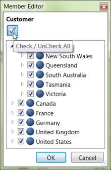
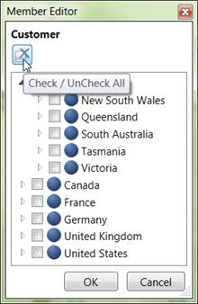

By clicking the Check/Uncheck All toggle button on top of the tree view in member editor, we check or uncheck all the nodes in the tree. The check/uncheck button image will get changed based on the state of the nodes in the tree.

Figure 37: All nodes are checked

Figure 38: All nodes are unchecked